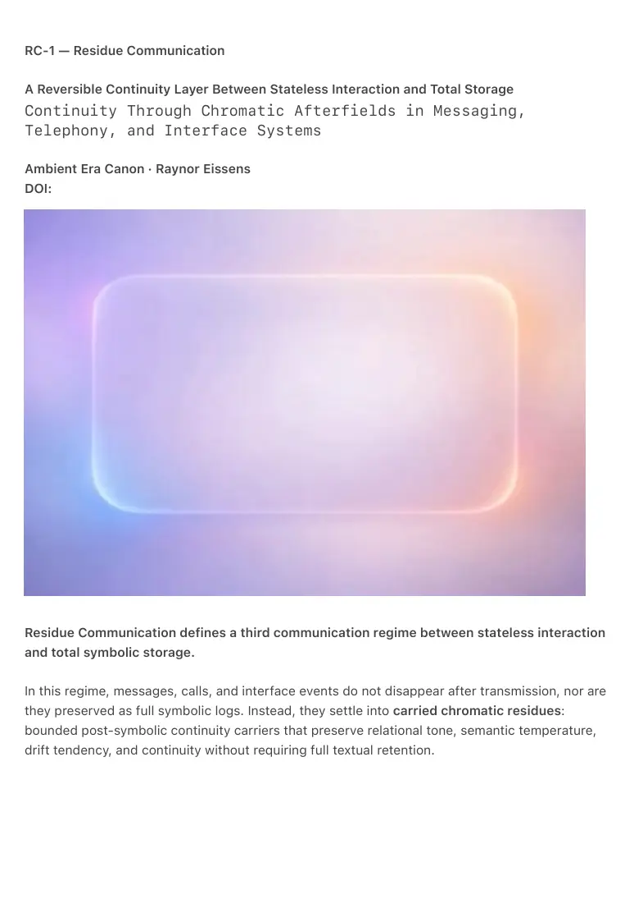

PDF page 1
RC-1 — Residue Communication
A Reversible Continuity Layer Between Stateless Interaction and Total Storage Continuity Through Chromatic Afterfields in Messaging, Telephony, and Interface Systems
Ambient Era Canon · Raynor Eissens
DOI:
Residue Communication defines a third communication regime between stateless interaction
and total symbolic storage.
In this regime, messages, calls, and interface events do not disappear after transmission, nor are
they preserved as full symbolic logs. Instead, they settle into carried chromatic residues:
bounded post-symbolic continuity carriers that preserve relational tone, semantic temperature,
drift tendency, and continuity without requiring full textual retention.

PDF page 2
Abstract
Residue Communication formalizes a reversible continuity layer for ambient systems in which
interaction does not end at transmission. Building on AM-1, where messages originate as
chromatic states and chromatic memory becomes primary storage, and on AC-1, where
telephony becomes presence-first and viability depends on ΔR minimization, RC-1 defines what
remains after expression: residue as carried field memory.
In RC-1, a message, call, or interface event resolves into a chromatic afterfield rather than
vanishing into statelessness or collapsing into full symbolic archive. This residue preserves
continuity in a lighter and more bounded form: not full text, not full transcript summary, not
total identity storage, and not a profile record, but retained chromatic structure sufficient to
carry relation forward. Such residues can function as relation memory, aura memory,
conversational temperature, and interface carry-forward.
The core claim of RC-1 is that continuity can be carried by residue rather than by exhaustive
symbolic retention. A previous interaction leaves a bounded field signature. That field signature
becomes part of the ground from which the next interaction emerges. Messaging, telephony, and
generative interfaces therefore cease to operate as isolated discrete events and become
continuity-bearing systems.
RC-1 does not propose stronger prediction, denser profiling, or richer extraction. It proposes
warmer continuity, lower entropy, and reversible relational memory. Its novelty does not lie in
the existence of memory in general, but in defining a third regime in which continuity is carried
by bounded, reversible, non-archival residue across messaging, telephony, and interface
systems.
⸻
Keywords
Residue Communication, Chromatic Residue, Ambient Messaging, Chromatic Telephony, Field Memory, Aura Residue, Reversible Communication, Chromatic Continuity, Ambient Interface, Residue OS, Afterfield, ΔR
⸻
PDF page 3
1. Introduction
Traditional communication systems oscillate between two unstable regimes. Either interaction is
effectively stateless, where each message, call, or session begins again from near-zero
continuity, or interaction is over-stored, where symbolic logs accumulate into heavy memory,
profiling, and irreversible burden.
Residue Communication defines a third regime.
AM-1 already established that communication can begin as chromatic state rather than symbolic
sentence, and that chromatic memory can function as primary storage. AC-1 extended this into
telephony, where a call is treated not as a symbolic request but as presence entering the field,
and where words are optional expansions rather than mandatory carriers. Chromatic Telephony
Volume II then introduced field memory in stronger form: groups can remember prior coherence
without storing symbolic history, and AI can stabilize such fields without becoming a controller.
RC-1 names the missing layer implicit in these works: what remains after communication has
taken place. That remainder is residue.
The purpose of RC-1 is not to claim that memory, state carryover, or adaptive continuity have
never existed. Its purpose is to define a more specific architecture: a bounded post-symbolic
continuity layer that is smaller than transcript summary, larger than zero-state disappearance,
and structurally reversible by design.
⸻
2. Core Definition
Residue Communication is a communication regime in which interaction settles into a carried
chromatic afterfield that preserves continuity without requiring full symbolic retention.
A residue is not:
• a transcript
• a summary log
• a user profile
• an archive of literal content
• a full conversational memory cache
A residue is a bounded post-symbolic continuity carrier expressing, in
compressed form:
• relational tone
PDF page 4
• semantic temperature
• drift tendency
• continuity of presence
• attractor bias
• residue of intent
• reversibility state
Residue is therefore smaller than summary and greater than zero.
It preserves enough structure to carry future continuity, but not enough content to
become exhaustive symbolic memory.
⸻
3. The Third Path
RC-1 proposes a third path between:
• stateless communication, where nothing meaningful remains
• total symbolic storage, where too much remains and continuity becomes
heavy
Residue Communication preserves neither nothing nor everything.
It preserves bounded structure.
This means a prior message can dissolve while leaving:
• a pink-green care field
• a blue-gray tiredness field
• a purple-orange structured-intent field
• a mixed social residue from a prior conversation
That residue becomes the continuity layer for future interaction.
This third path is not an ethical preference added afterward. It is the architectural
center of RC-1.
⸻
4. Residue Formation
A communication event in RC-1 follows this sequence:
state → expression → chromatic compression → residue
PDF page 5
Where:
• a message begins in state
• expression occurs through chromatic or symbolic surface
• the event is compressed into a carried afterfield
• the afterfield remains available as continuity memory
This extends the AM-1 principle that messages originate in state and may expand
into language only when necessary. It also extends the AC-1 principle that calls first
appear as presence fields and tone-bearing chromatic states before words.
Residue formation is not archival replay.
It is the settling of interaction into a lighter post-symbolic carrier.
⸻
5. Reversibility Requirement
RC-1 treats reversibility as a constitutive property, not as a later ethical preference.
A viable residue layer must:
• remain bounded
• avoid transcript reconstruction
• avoid profile hardening
• avoid irreversible memory burden
• remain capable of soft decay, modulation, or renewal
Any residue layer that hardens into profiling burden, irreversible retention, or transcript-like
reconstruction ceases to qualify as Residue Communication.
This requirement distinguishes RC-1 from ordinary compressed memory systems.
Residue is not merely compact storage.
Residue is reversible carried structure.
⸻
6. RC-Core, RC-M, RC-T, RC-I
To avoid collapsing residue into a single vague concept, RC-1 defines four layers:
RC-Core
PDF page 6
The shared substrate:
• bounded residue
• post-symbolic continuity
• reversible carry-forward
• cross-medium field memory
RC-M — Residue Communication for Messaging
A sent message leaves a carried chromatic residue that shapes future message emergence
without requiring full textual recall.
RC-T — Residue Communication for Telephony
A call leaves an aura residue or field memory that persists after the call ends and informs future
relation surfaces.
RC-I — Residue Communication for Interface/Runtime Systems
An interface may emerge partly from prior interaction residue rather than only from explicit
current intent, query, or task-state.
These three media claims are linked by RC-Core but should not be reduced to one another.
⸻
7. Residue in Messaging (RC-M)
In messaging, RC-M means that a sent message does not merely enter a chronological thread. It
also leaves a chromatic residue.
Examples:
• a caring exchange leaves a soft pink residue
• a practical exchange leaves a purple-green residue
• a playful exchange leaves an orange-yellow residue
• a difficult unresolved exchange leaves a red-gray residue
The next message can therefore emerge not from empty state, but from carried
residue.
Messaging becomes:
PDF page 7
• less like serial parsing
• more like continuity in a field
In RC-M, continuity is not carried by transcript replay alone.
It is carried by the bounded residue of prior expression.
⸻
8. Residue in Telephony (RC-T)
In AC-1, telephony is already presence-first and chromatic. RC-T extends this further: when a call
ends, its aura does not collapse to zero. It leaves behind a residue.
A telephony residue may carry:
• the emotional temperature of the call
• the dominant relational field
• the chromatic tendency of interaction with that person
• the lingering tone of a shared moment
This allows a contact page or call surface to show not only that someone exists, but
what kinds of fields tend to emerge in communication with them.
Telephony therefore becomes continuity-bearing rather than strictly binary.
Not just:
• ring / answer / end
but:
• presence / exchange / residue / carried return
⸻
9. Residue in Group Fields
Chromatic Telephony Volume II already states that fields can remember prior coherence without
symbolic logs. RC-1 formalizes this as residue at the group scale.
A family, team, project, or care-network can accumulate:
• stable chromatic tendencies
• shared residue fields
• prior coherence signatures
PDF page 8
• recognizable atmospheric patterns
This means groups are not remembered through notification history alone, but
through carried field memory.
⸻
10. Residue in Generative Interfaces (RC-I)
RC-I extends beyond communication channels into interface systems.
A generative interface need not emerge only from present intent, query, or task context. It can
also emerge from residue:
• the residue of prior action
• the residue of earlier focus
• the residue of relational context
• the residue of previous navigation
An interface can therefore become residue-aware.
It does not merely respond.
It carries forward.
This opens a route toward:
• residue-aware fronts
• residue-aware runtime systems
• residue-aware telephony
• residue-aware messaging
• residue-aware generative OS layers
The next interface is therefore not generated from present intent alone.
It may also be generated from what previous interaction gently left behind.
⸻
11. Privacy and Memory
RC-1 introduces a lighter continuity principle.
Instead of storing:
• full transcripts
• exhaustive histories
PDF page 9
• total symbolic memory
• identity-heavy conversation logs
the system may store:
• chromatic afterfields
• fieldcards
• aura residues
• coarse semantic temperatures
• carried residue signatures
• reversibility states
This offers a third memory architecture:
• not stateless
• not fully retained
• but continuity by compressed residue
Residue in RC-1 is not accumulated symbolic burden, but reversible carried structure.
This makes RC-1 neither anti-memory nor pro-archive.
It is a bounded continuity regime.
⸻
12. Canonical Laws of Residue Communication
RC-Law 1 — Interaction Does Not End at Transmission
Every message, call, or interface event may settle into residue.
RC-Law 2 — Residue Preserves Structure, Not Exhaustive Content
Continuity is carried through compressed field memory rather than full symbolic retention.
RC-Law 3 — Residue Must Remain Reversible
A viable residue layer cannot harden into irreversible burden, profiling, or transcript-like
reconstruction.
RC-Law 4 — New Expression Emerges from Prior Residue
Future communication may arise from the chromatic ground left by earlier interaction.
PDF page 10
RC-Law 5 — Residue Is a Continuity Layer Across Media
The same substrate can operate in messaging, telephony, group fields, and generative
interfaces.
RC-Law 6 — Residue Is Smaller Than Summary and Greater Than Zero
Residue must remain a bounded carrier distinct from both full conversation summary and full
disappearance.
⸻
13. Relation to Prior Canon
RC-1 stands directly on:
• AM-1, where messages begin in chromatic state and chromatic memory is
primary storage
• AC-1, where telephony is presence-first, language is optional, and ΔR
minimization determines viability
• Chromatic Telephony Volume II, where groups remember prior coherence
without symbolic history and AI acts as stabilizer rather than controller
RC-1 makes explicit what these earlier layers implied but did not yet isolate:
residue is the continuity operator that carries communication forward once chromatic
systems become primary.
⸻
PDF page 11
14. Conclusion
Residue Communication defines the missing continuity layer between state-first communication
and ambient interface systems.
It shows that:
• messages need not vanish into statelessness
• continuity need not require full symbolic storage
• communication can persist as carried chromatic residue
• calls can leave aura memory
• interfaces can emerge from prior residue
• relation can remain warm without becoming heavy
RC-1 is not merely an extension of messaging.
It is a broader communication and interface principle for systems that need
continuity without overload.
In Residue Communication, the next interaction does not begin from nothing.
It begins from what the previous interaction gently left behind.
⸻